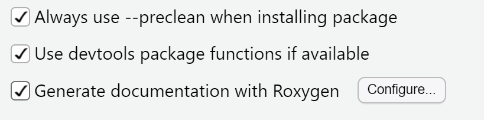
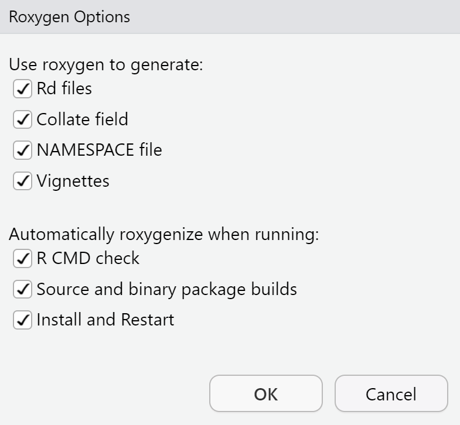

usethis::use_git_config(user.name = "PUT GITHUB USERNAME HERE", user.email = "PUT GITHUB EMAIL HERE")Package (400 pts)
SDS 270: Programming for Data Science in R, Spring 2026
Overview
The time has come!! You will be working in groups of 2-3 to create a sound, reproducible, and complete R package on a topic or interest of your choice. Here are the following elements:
- Proposal and Outline (20 pts, due Wednesday, 4/1 at 11:59pm)
- Proposal on topic in mind, with basic functionality of package. An outline will scheme out how the package will work and which functions might be created to accomplish its goal.
- Checkpoint #1: Minimum Viable Project (20 pts, due Monday, 4/13 at 11:59pm)
- Own repository set up with multiple commits from each member in group
- Basic framework is configured, with an attempt at each component
- Pass R CMD check (no errors, no warnings, minimal notes)
- Rehearsal (30 pts, given during allotted times on Monday, 4/20)
- 10 minute conversation with Jericho regarding package and R concepts
- Introduction into package, followed by Q&A about its components
- Checkpoint #2: More Complete Viable Project (20 pts, due Friday, 4/24 at 11:59pm)
- Steady progress towards finished product
- Demonstration (60 pts, given in-class on Wednesday, 4/29)
- 5-8 minute demo walking through package
- Final package (250 pts, due Wednesday, 5/6 at 11:59pm)
The repository (representing your package) will have the following components by the last turn-in:
- Setup-related items
DESCRIPTION.mdLICENSENAMESPACE
- Documentation
README.mdfile (describing main components/rationale to package)manuals/(i.e. help files)- Created for all function files and objects
vignettes/(i.e. tutorial file)- One main vignette walking through a thorough example of the package
- Back-end
R/- .R scripts to accomplish 8-10 tasks (consisting of one or multiple scripts)
tests/- Appropriate testing on all function files (via
testthat)
- Appropriate testing on all function files (via
data/- At least one real/simulated dataset that your package is centered around
After the second exam, in-class time will be split up differently, where the first 20-25 minutes of class will be spent on a mini-lecture, while the rest of the time will be given to y’all to work on your packages. In this time, you are free to collaborate with your group members and/or consult with me about the package.
Learning Objectives
As the main summative assessment of this course, you will work in groups of 2-3 to develop and create an R package that is reproducible, clear, robust, and readable. By the end of this assignment, you should be able to:
- Create readable and clear files for each component of an R package, including R scripts, data, tests, manuals, and vignettes
- Work in a collaborative environment using git and GitHub
- Demonstrate a package and how it runs to a general audience
You will receive feedback on the functionality, clarity, robustness, and readability of your code and documentation through a series of checkpoints. More on that in the Components section.
Guidelines
1. Form your group and determine topic.
You will form groups of 2-3 to work with for the project. From there, y’all will determine a topic and potential functions to center a package around.
The package can relate to a personal or academic interest, some statistical or analytical tool, build upon an existing package, or other items. Consult with me if you need guidance on the topic. In previous iterations of this course, the following topics have been explored:
- Analyzing video game sales across the globe
- Exploring Olympic data
- Working with Federal Election Commission data
- Expanding the Pokedex for Pokemon
- Providing functionality for ASCII art via R
You can explore a couple packages in-depth from last semester to see the package structure and its content:
You can also consider some of the packages seen in CRAN itself.
2. Set-up and develop a proposal and outline.
With a topic in-hand and your group determined, your group will first create a repository that will be your package itself. For all members:
- Check to see if your GitHub credentials are in RStudio using
gitcreds::gitcreds_get().- If no information is available, then you will need to run the following code:
- Create a new GitHub token (if needed) using
usethis::create_github_token(). Set an expiration date for after the semester. - Use
gitcreds::gitcreds_set()to access input for the token, then input the token inside.
Then, have one group member do the following:
- In RStudio: File > New Project > New Directory > Package.
- Come up with the package name and find an appropriate local directory to house this repository.
- Check the “Create a git repository” box, then click “Create Project”
- Connect your repository to GitHub
- Run
usethis::use_github()to create the GitHub repository that will then link to the project.
- Run
- Add the other members and Jericho (@jericholawson) as collaborators on GitHub (either via email or username)
For the other members:
- Accept the collaboration invite.
- In RStudio: File > New Project > Package Control > git.
- Copy the URL of the GitHub repository and then find an appropriate local directory to house this repository.
Once you all are able to commit, pull, and push items from your cloned repositories to GitHub, your group will then write up a proposal and outline that discusses the topic of your package, its potential functionality and tasks, and what the goal of the package is. At the bottom of the write-up, you will loosely outline the hierarchy of R scripts and their connections to other scripts and data. This will all be done in the README.md file.
Your proposal should be be about 2-3 paragraphs, with the additional outline of the package itself.
Refer to the criteria in the Components section for more details on this proposal.
3. Build the package and its components.
You will build a base package and its components after getting approval from the proposal. The following resources will be extremely beneficial as you build your package:
- R Packages textbook
- Packages:
Make sure that all packages are installed and loaded to utilize these packages. Additionally, you will do the following to ensure proper roxygen2 usage:
- Go to Tools > Project Options > Build Tools
- Make sure all boxes are checked as seen in the first figure below.
- Click on Configure and then make sure all boxes are checked as seen in the second figure below.
- Click OK.


You will need to have the following components by the end of the project:
README.md- After removing the proposal ideas, you will write a minimum of 3 paragraphs that talks about its use, installation, and brief details. This can take on a variety of forms, but the goal of this README.md is to provide a basic understanding of what the package does for the user and how they can use it.
DESCRIPTION.md- This file should contain package information, including but not limited to: the title, authors, version, description, license, and dependencies.
- This should be updated automatically via
roxygen2.
LICENSE- This will provide a license to your package if needed.
- This should be updated automatically via
roxygen2.
NAMESPACE- Should be automatically generated using
Roxygen.
- Should be automatically generated using
R/- You will need to have .R scripts that accomplish 8-10 tasks covering the main functionality of what you intend for the package to do. Each function file should contain appropriate Roxygen comments for documentation, the function itself (or functions themselves), and error handling. The scripts themselves can be of any length, but should contain a function or series of functions that carry out a particular task. For example, a script may consist of
Roxygen2comments and a function that does some data wrangling on some objectx. Note that a task can be done in a single script or multiple ones.
- You will need to have .R scripts that accomplish 8-10 tasks covering the main functionality of what you intend for the package to do. Each function file should contain appropriate Roxygen comments for documentation, the function itself (or functions themselves), and error handling. The scripts themselves can be of any length, but should contain a function or series of functions that carry out a particular task. For example, a script may consist of
tests/- You will need to have test files for all R scripts created in your package. These test files should cover main uses of the function (including intended usage and edge cases.)
manuals/- Documentation will be created for all function files and data objects. For the manuals, you will need to have a title, description, items, values, details, and examples.
vignettes/- A vignette can be thought of as a tutorial for a user who wants to use multiple pieces of your package. Your group will write one vignette to detail how to run through certain actions with your package.
data/- You will need to have at least one simulated or real-world dataset. This should be connected to the functions you create.
4. Complete checkpoints.
Refer to the checkpoints in the Components section.
5. Create demonstration for package use.
Your group will develop a 5-7 minute demonstration that showcases the functionality of your package. You will want to talk about the rationale behind the package, how a starter can use it, and what it can do.
You can use your vignette to guide through the demonstration. The package will need to be operational on at least one of your computers, so make sure that you walk through what you will showcase prior to the demonstration.
For more information on the criteria, see the Components section.
6. Complete package development.
All project work will need to be committed and pushed to GitHub (@jericholawson) by Wednesday, 5/6 at 11:59pm.
Components
Proposal and Help File
20 pts, due Wednesday, 4/1 at 11:59pm
Your group will write a proposal and outline centered around the package that will be created. The proposal should address the topic you want your package to center around, what functionality your package will have, and how it will be impactful for users. You will loosely outline the hierarchy of R scripts and their connections to other scripts and data. This will all be done in the README.md file.
The grading criteria is below:
- (10 pts) Content: Is your topic extensive enough to create functions/data for? Do you provide possible sources for certain pieces of information in your package? Do you have a sensible layout to this potential package?
- (10 pts) Formatting: Is the proposal clear and detailed? Is it in some form of a .md file? Was this turned in on time?
The proposal will be committed and pushed as the README.md file in the GitHub repository for your package. Feedback will be given on the proposal thereafter.
Checkpoint #1: Minimum Viable Project
20 pts, due Monday, 4/13 at 11:59pm
This checkpoint is designed to make sure your team is on the right track. By this point, you should have a minimum viable project (MVP) that has the following specifications:
- (5 pts) Commits from each of the group members
- (10 pts) The structure mentioned in guideline #3 exists with:
- At least one working file for each component
- Noticeable progress within each part
- (5 pts) Pass R CMD check (no errors, no warnings, and minimal notes)
Teams will get feedback about their progress on GitHub after the submission date.
Rehearsal
30 pts, conducted on Monday, 4/20 in lieu of lecture
A rehearsal will be conducted to analyze your ability to think critically about code as a programmer and provide an opportunity to showcase your package (and its potential) in a 1-on-1 format.
During the 8-10 minute rehearsal, you will be discussing the following:
- (10 pts) Introduce the rationale and overview of your package up to this point
- e.g. What is it? Who is it for? Why? How?
- (10 pts) Answer 2-3 questions related to specific parts of your code
- e.g. What considerations are needed for your function? How does the function operate? Why is it coded as such?
- (10 pts) Critique your skills as a programmer and the package at its current state
- e.g. Strengths? Weaknesses?
Arrive with the understanding that mistakes are absolutely fine along the way, but do not try to oversell yourself or the package’s capabilities.
Signups will occur the week prior.
Checkpoint #2: More Complete Viable Project
20 pts, due Friday, 4/24 at 11:59pm
Continuing the momentum from the last checkpoint, you will have new additions to your package such that the following criteria is met:
- (4 pts) Complete, rough drafts of your
README,DESCRIPTION,LICENSE, andNAMESPACEfiles - (4 pts) At least 5 mostly-created function files created for your
R/folder - (4 pts) At least one complete test file
- (4 pts) A rough draft of a sample vignette
- (4 pts) All data necessary to run through package
Teams will get additional feedback about their progress after the submission date.
Demonstration
60 pts, given on Wednesday, 4/29 during lecture
During the final lecture of the semester (i.e. Wednesday, 4/29), teams will present a demonstration of their package to the class. Signups will occur the week prior.
The goal of the demonstration is to show the functionality and rationale of the package. The demonstration should take about 5-7 minutes. The following criteria will be used:
- Context (20 pts)
- Provides the rationale behind why your package is relevant and useful
- Showcases context in the functions that are presented
- Discusses future directions and pitfalls of this package
- Functionality (20 pts)
- Shows how 2-3 functions work, either through a given walkthrough or vignette
- Discusses accessing the package and how it can be used in conjunction with other tools
- Presentation (20 pts)
- All members provide meaningful insights in an engaging and clear fashion
- Demonstration is organized, with minimal errors and mistakes
- Equal participation amongst all group members
Final Package
250 pts, due Wednesday, 5/6 at 11:59pm
The final package will be completed by Wednesday, 5/6 at 11:59pm. When finished, you will commit and push all changes via GitHub (via @jericholawson).
The layout from guideline #3 will be used here. Specifically, the criteria will be the following:
- Components (50 pts)
- All parts are included in the package and meet the requirements mentioned in Guideline #3.
- Functionality (50 pts)
- Each part of the package works as intended, with no errors or warnings.
- Appearance (50 pts)
- Code is well-commented, organized, and uses certain practices for efficiency.
- Text documents are organized and clear to the reader.
- File names are clear and to-the-point.
- Relevance (50 pts)
- Rationale to the package is legitimate.
- Functions correspond to the package’s intended goal and description.
- Detail (50 pts)
- Appropriate amount of description that conveys what the package does.
- A complete set of R files and vignettes that provide a basic understanding of the package.